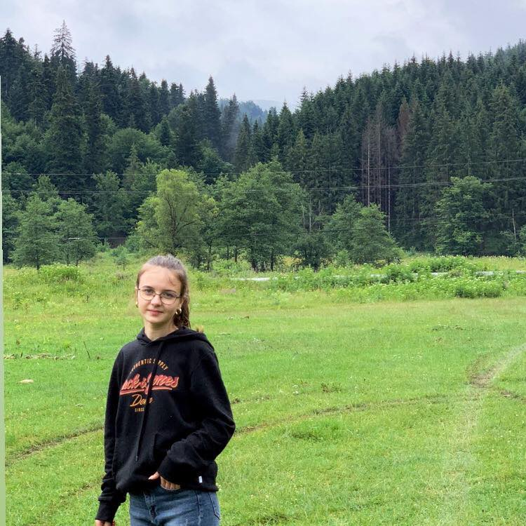

Pagina mea

Buna! Mă numesc Adăscăliței Teodora-Florentina, am 18 ani, sunt din jud. Botoșani, orașul Flămânzi.
Am absolvit la Colegiul Național A.T. Laurian. Clasele I-VIII le-am făcut în Flămânzi la școala Mihail Sturdza.
O mică descriere
Sunt o fire mai leneșă, mai mereu las tot pe ultima sută de metri :d..
Îmi pare că lucrez mai bine sub presiune, dar mă și stresez foarte mult.
Îmi place să ma uit la seriale, să dansez și multe altele. Din clasa a VI a m-am înscris la dansuri populare, am călătorit foarte mult cu dansurile, am fost în foarte multe județe din România, dar și în Italia, Turcia, Chișinău.
În clasa a VIII a am renunțat la dansuri, deoarece aveam examenul și nu mă puteam împarți în ambele părți. Ansamblul folcloric se numește ”Trei generații ” Flămânzi, erau incluse dansurile populare, dar și obiceiurile de iarnă.
Urmează să prezent o listă cu cateva serialele pe care le-am urmarit și cateva trailere:
Lista cu seriale
- Ginny & Georgia
- Shadowhunters: The Mortal Instruments
- Dynasty
- Lucifer
- Instasiable